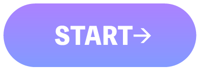

あらすじ
リニア中央新幹線の開業によって、橋本には通勤・通学や観光など、さまざまな目的で多くの人が訪れるようになった。
人が集まることで街はさらに活気づき、暮らしにも変化が生まれている。
相模原市では、ロボットが人々の暮らしを支える取り組みが進み、街のあちこちで人とロボットがともに過ごす姿が見られるようになった。
2040年の橋本を調査するため、
あなたは「未来調査員」に任命された。
街の中で迷子になったロボットたちを探し出し、スポットを巡りながら9つの「未来ピース」を収集しよう。
案内ロボ
未来調査員であるプレイヤーの案内役。相模原の市の花であるアジサイがチャームポイント。街のことや未来の暮らしについて探査のサポートをするよ！
さぁ、すべてのピースを集め、
2040年に関する未来のデータを持ち帰ろう！
